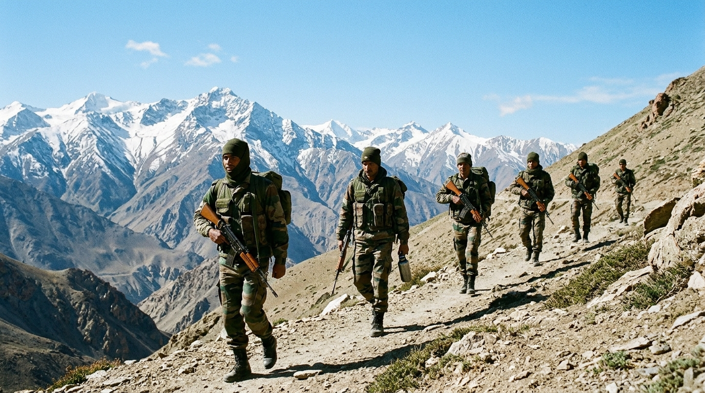

History of the Indian Army
Follow the transition from the pre-independence military to the modern democratic armed force, including post-1947 conflicts and modern institutional modernisation.
Read History Timeline →Understanding the history, organisation, doctrine, and selfless service of one of the world's largest, most disciplined professional volunteer land forces.
The Indian Army is the principal land warfare component of the Republic of India's Armed Forces, commanded under the supreme authority of the President of India.
Operating under the motto "Seva Paramo Dharma" (Service Before Self), the Indian Army's primary mission is to ensure national security, defend territorial integrity, and deter external aggression across some of the world's most demanding physical terrains—from the glacial heights of the Himalayas to the Thar Desert and dense tropical riverines.
As a completely voluntary, professional, and secular institution, the Indian Army serves strictly under democratic civil oversight, maintaining strict political neutrality while rendering swift humanitarian aid to civil authorities during major national emergencies and natural disasters.

Navigate through comprehensive educational chapters examining the institutional evolution, technical capabilities, operational legacy, and human dimension of the Army.
Follow the transition from the pre-independence military to the modern democratic armed force, including post-1947 conflicts and modern institutional modernisation.
Read History Timeline →
Learn how commands, corps, divisions, brigades, and regiments function. Understand the distinct roles of combat arms, combat support, and logistics services.
Examine Command Structure →
Discover the Army's role in Humanitarian Assistance and Disaster Relief (HADR)—saving lives during floods, earthquakes, landslides, and medical emergencies.
View Rescue Case Studies →An authoritative guide to Commissioned Officers, Junior Commissioned Officers (JCOs), and Other Ranks with accurate insignia descriptions.
Explore Rank Hierarchy →Inside the National Defence Academy (NDA), Indian Military Academy (IMA), Officers Training Academy (OTA), and specialised high-altitude warfare schools.
Discover Training Schools →Explore tanks, artillery howitzers, helicopters, multi-barrel rocket systems, and indigenous innovations under the Make in India defence initiative.
View Equipment Catalog →This educational portal is curated exclusively from documented official publications of the Ministry of Defence, official releases of the Press Information Bureau (PIB), parliamentary records, and standard military history publications. It contains zero speculative figures, fabricated logos, or unverified claims.